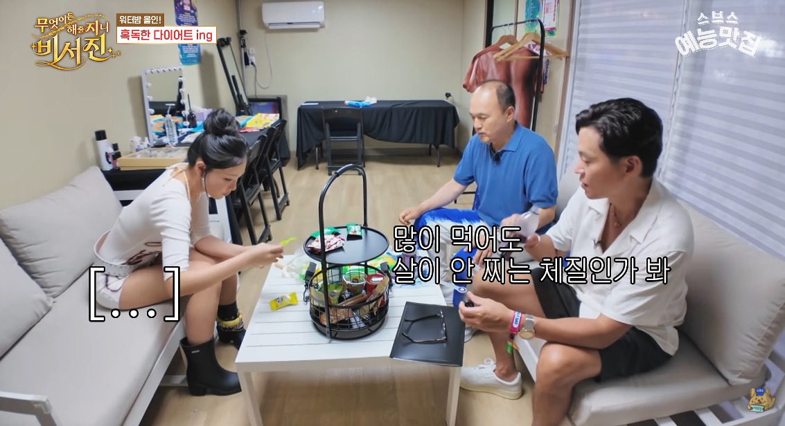
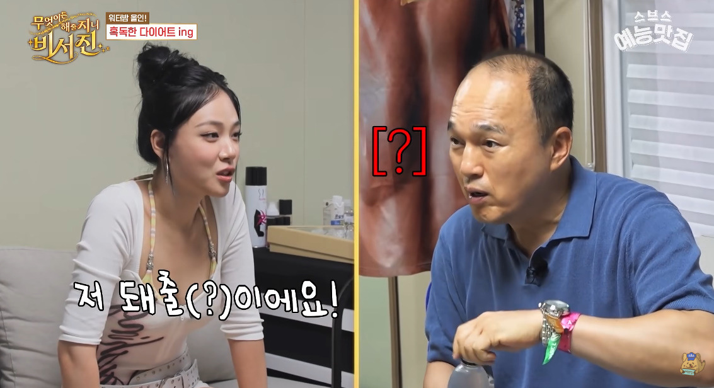
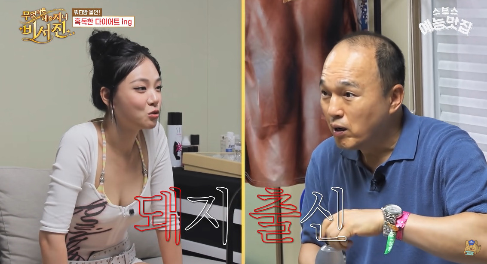
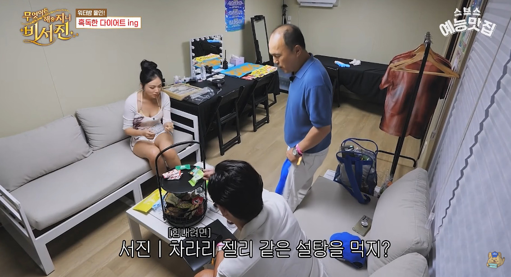

돼출이라는 말을 처음 들어봄…
그나저나 당이나 염분이나 뭐가 더 살찌는지 궁금하다




돼출이라는 말을 처음 들어봄…
그나저나 당이나 염분이나 뭐가 더 살찌는지 궁금하다
(전)대머리같은 말은 존재하지 않아요
대머리는 그냥 대머리인 겁니다
염은 배출되니까 뭐
이서진이 예전사람이라 예전이론가지고있네 요즘에 염분은 그닥상관없으니까 먹어도된다던데
건강엔 그렇다는 말이있고 관리엔 쥐약이지
돼출이래 기준이
비비 자신기준 도ㅐ지란거아냐 ㅋ
염분은 딱 붓기 때문에 그런 거 아님?? 하루 정도 덜 먹고 땀 빼면 괜찮아지던데
소금 먹으면 몸이 붇는 이유?
칼로리는 없지만 삼투압 때문에 수분배출이 어려워져서
설탕은?
칼로리도 있고 삼투압도 작용함
수분 배출 어려운건 똑같아서 몸도 붇지만...
칼로리가 있어서 살도 찜
붓
붇
뿡
염분도 과해서 좋을긴 없는데 요즘 당 섭취라고 하면 액상과당 같은 좆되는 당이라...
염분은 붓기가 문제고 이런건 걍 운동하고 땀 쫙빼고 푹 쉬면 빠짐
액상과당은 그냥 만악의 근원임
이미 고사된 다이어트 염분악마화 틀딱 유사과학 등장ㅋㅋㅋ
길냥이 겨울에 돼지 되는게 염분 많은거 먹어서 라던데
아무래도 당보다는 염분 아닐까
살 빠지는 이야기보다 머리 빠지는 얘기가 더 시급해보이는데
아 씹ㅋㅋㅋㅋ
그건 이미 끝난 얘긴데 뭘 더 얘기할 게 있음??
늘 짜릿해
그나마 단백질있는 소세지가 단순 당폭탄인 젤리보다는 낫지
정제당보다는 소금이 낫지
염분은 지방끼는게 아니여
식단 중이면 염분 좀 넣는다고 크게 문제 없음 하지만 정제당은 걍 몸에 안좋음
염분은 살찌고 그런게 아니던데 50년 장기관찰 결과도 짜게먹는사람들은 딱히 문제없는데 달게먹던사람들은 개 좆이되버림
염분은 과하게 먹으면 일시적으로 붓는거지 살찌는것관 큰 연관 없는 인상이긴한데
소금은 결국 0칼로리 지방으로 안 감
젤리는 결국 당이라서 지방으로 감
뇌피셜입니다
당뇨는 있어도 염뇨는 없자너
개추 ㅋㅋㅋ
형 서 됴 아!!!!
와! 전형서씨 아시는구나!
젤리보단 소시지가 낫지않을... 음
염분은 음식이 맛있어져서 많이.먹게 되는 문제
그럼 그냥 대머리 아닌가요?